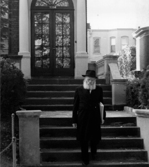
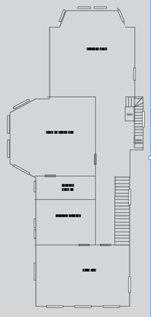

Inside the Rebbe’s Personal Residence
The Rebbe and Rebbetzin’s house on President Street has three floors. Only the first floor was opened to the Chassidim during the year of mourning for the Rebbetzin a”h. The second floor, with the bedroom and the Rebbe’s office, were off-limits. Through the stories of the mashbakim (abb. for meshamshim ba’kodesh, those who serve in the holy) who worked in the house for many years, we gingerly and on tiptoe gazed upon the holy from afar.

If the house of a tzaddik has aspects of k’dusha, as all his utensils and the things he uses are holy, then his personal space, reserved for him alone, is something like the “holy of holies” which nobody approached except for the High Priest himself.
The Rebbe’s house on 1304 President Street was closed to the Chassidim except for the guests invited by the Rebbetzin. After the Rebbetzin’s passing on 22 Shevat 5748, the Rebbe spent the year of mourning in his house with the t’fillos and the distribution of dollars taking place there. That is when the house was opened to the Chassidim for the first time.
During the year of mourning, only the first floor was accessible to the public during t’filla etc. while the second floor’s privacy was maintained. The second floor was where the Rebbe and Rebbetzin lived and where the Rebbe spent his days during the year of mourning.
Even those who had been invited to visit by the Rebbetzin never went up to the second floor, but remained in the large dining room on the first floor. We have only one, unusual example of a guest who went to the second floor, to the bedroom, as related by Mrs. Louise Hager:
“In 5744 I heard that the Rebbetzin was in pain after hurting herself and wasn’t receiving anyone. We were reminded of everything she had done for us over the years and we greatly desired doing something, anything, to help her.
“I got up my courage and called the Rebbetzin and said honestly that I had no particular reason to go to New York but if I knew that I could visit her, I would go.
“She was silent for a moment and after thinking a bit she said, ‘You would come just for me?’
“‘Yes,’ I said, ‘just for you.’
“She did not say whether I should come or not but I could tell that she was smiling. I went to New York.
“That was the first time that the Rebbetzin received me in her private room upstairs. She was sitting in a large easy chair, her face was pale, but she was as gracious as ever. I was happy that I wasn’t seeing her lying down in bed, but later I found out that before I came she had mustered her strength to get up and give the impression that she felt well … She succeeded in this so well that our conversation lasted about five hours! They flew by so quickly that I didn’t realize how much time had gone by. What did we talk about? About everything! The Rebbetzin asked about each of my family members and when I showed her pictures she said she would be happy to show them to the Rebbe.
“The next day I went back to see her again. I went shopping along the way. I showed her the bargains I had picked up and she expressed her opinion about what I had bought. During our conversation she told me that the Rebbe had seen the pictures and it gave him much pleasure. She even pointed at the pictures the Rebbe liked most.” ;

Between the first and second floor were two sets of stairs, one by the living room and another one near the dining room. During the year of mourning the Rebbe always came down the central staircase into the living room where people were already waiting.
Everybody knew not to go up the stairs because that was forbidden territory. We have an interesting first-hand account from the perspective of a child, Shemi Rokeach, who often visited the Rebbetzin when he was a boy because his grandmother was a friend of the Rebbetzin (see issue 642 for more of his reminiscences):
“As a little boy I often visited the Rebbetzin’s house. My grandmother would go and visit the Rebbetzin now and then and would take me along. My parents also often went to the Rebbetzin. Despite our close friendship, we maintained great respect for the Rebbetzin. Before we went to her house, we dressed up nicely and made sure we were neat and clean. We felt we were going to the palace of the king and queen.
“When we visited the Rebbetzin, my parents or my grandmother would speak to the Rebbetzin in the living room and we children would walk around the first floor. We knew we were not allowed to go up to the second floor where the bedrooms and the Rebbe’s office were. I remember how we would go up one step and then another in a competition to see who would climb the most stairs to the second floor, but we always came back down. We did not dare go all the way up.”
A VIRTUAL TOUR
We tried to get a sense of the second floor, with the help of the mashbakim who worked in the Rebbe’s house for many years. Let us begin with the side that faces the street where there was a relatively spacious bedroom that contained two beds and chests of drawers. On Shabbos mornings, as bachurim from 770 would come to escort the Rebbe to 770, they sometimes noticed the Rebbetzin looking from the window of the bedroom to see if the bachurim had come already. A few minutes later the Rebbe would leave the house.
The Rebbe and Rebbetzin ate their meals in the dining room. This was not the case when the Rebbetzin suffered problems with her feet and could not go downstairs. Then the mashbak would take the meals upstairs.
One can’t help but be moved by the story told by mashbak R’ Chesed Halberstam about how one of the times the Rebbetzin was confined to bed, he placed her supper on a chair next to her bed so it would be easier for her to eat. He put the Rebbe’s meal on the table as usual but to his surprise, he noticed that the Rebbe took what had been prepared for him and walked to the bedroom, where he placed the tray on the chair where the Rebbetzin’s supper had been placed and joined the meal.
***
There was a bathroom next to the bedroom and then another bathroom connected to the Rebbe’s office.
“One time, the Rebbe saw me filling a cup of water from the faucet in the bathroom next to his office,” said Chesed Halberstam. “Afterward, he said this room has an element of impurity in it and I shouldn’t take water for washing from this room but from the kitchen on the first floor. [As a side note, they always put two cups of water for washing next to the Rebbe’s bed so if the Rebbe got up in the middle of the night, he had another cup of water.]
Sholom Ber Gansburg:
“At the beginning of the night, I filled up negel vasser for the Rebbe from a faucet on the first floor since that was the only faucet that was not in a bathroom. Nevertheless, I saw afterward, when I sat in the hall, that the Rebbe went down to the first floor to refill the cup. I realized that this was because the Rebbe would wash a few times a night and after that I regularly put more than one cup of water. In addition, I would check the Rebbe’s bedroom to see if there was water in the cup. If I saw that it was empty, I would fill it (that is when I noticed that after the Rebbe washed his hands, he did not put the cup back into the basin with the discarded water).
Continuing down the hall, next to the washrooms was the Rebbe’s office which was also a spacious room. In four places in the room, on the walls, are four sconces with bulbs. There were two on the eastern wall and two on the western wall. After the passing of the Rebbetzin, the Rebbe told the mashbak to leave one of the lights on the western side constantly lit.
Since this was the Rebbe’s private office, we don’t dare to peek inside, but it is easy to surmise that this is where the Rebbe sat and learned and did his work. The Rebbe often went home in the evening with a bag of correspondence and when he returned to 770 in the morning he gave his responses to the letters he had taken home.
The Rebbe hardly slept at night. Nobody really knew when the Rebbe slept and when he was working. The secretaries said that only in 5738, after his heart attack, when the Rebbe stayed in his room in 770 and the secretaries were there 24 hours a day, did they see that the Rebbe did not sleep for more than three hours a day and they were not consecutive.
The Rebbe’s room was closed and he was busy with his holy work. During the night the Rebbe occasionally came out of his room and went to another room in the house and when he left the door to his office open it was a signal to the mashbak that he had permission to enter if he needed to take care of something.
There were rare occasions when a Chassid needed a bracha most urgently and there were singular cases in which someone was allowed to call the Rebbe’s house and the mashbak would take the call and pass it along.
There were also emergency situations in which someone needed an immediate salvation and those close to Beis HaRav called the Rebbetzin to ask her to speak to the Rebbe to arouse mercy. If it was during that short period of time when the Rebbe rested, she conveyed the information only after he woke up.
Chesed Halberstam told an unusual story in the days following 22 Shevat in an interview that he gave Kfar Chabad:
“The phone rang late at night in my house. It was the Rebbetzin speaking from the phone in the elevator. She said the elevator had gotten stuck between the ground floor and the next floor. She had pressed the alarm button which could be heard throughout the house but the Rebbe had not responded. Thus, she had no choice but to call my house.
“Of course, I rushed over to the house. I tried opening the outside doors with my keys but they were locked from the inside. I called the Rebbetzin from a pay phone and asked her what I should do. She told me there was no choice but to take a ladder and to enter the house through a window. She said all the windows were closed and the shutters pulled down except for the window facing the bedroom where the Rebbe was. ‘You have no choice but to enter his room in order to go down from there to the cellar and release the elevator,’ she said.
“With trembling heart I set out on this unpleasant task, i.e. entering the Rebbe’s private room. I climbed the ladder and opened the window. I was immediately so frightened that I nearly fell off the ladder. Before my eyes I saw a wondrous, awesome sight. The Rebbe was sitting motionless facing the window with his eyes open.
“It took time for me to recover. Then I got up my courage and entered the room and went down to the cellar and released the elevator. I told the Rebbetzin what I had seen and asked her to explain to the Rebbe the extenuating circumstances that had me enter his room. She promised to convey my apologies but the next day she said that the Rebbe hadn’t even noticed that I had come in!”
THE ELEVATOR
The elevator in the house went from floor to floor with its main station being in the cellar. The elevator is one of the few major changes made in the house since it was bought by the Rebbe and Rebbetzin. It was installed after the Rebbetzin had problems with her legs and found it hard to use the stairs.
At first they installed a moving chair on the staircase which brought the Rebbetzin up and down, but the Rebbe did not like it. The idea arose to construct an elevator in place of the other elevator, actually a dumbwaiter, which was used only to hoist and lower objects.
Some people thought it would not be possible to construct an elevator for people in such a narrow space in such a way that people would feel comfortable using it. Sholom Ber Gansburg thought that such an elevator could be built. In order to prove it, he built a model elevator out of wood which showed that the space was wide enough to enable someone to comfortably go up and down.
When the Rebbe came home he saw the model elevator and gave his approval to building an actual elevator. R’ Mendel Gansburg, one of the mashbakim, brought workers and together they built an elevator which the Rebbetzin used regularly.
***
At the end of the hall on the second floor is another separate living room and a library. In the center of the living room is a wide couch next to which is a special table built by the craftsman R’ Yaakov Lipsker a”h. He is the one who built the Aron Kodesh (in the same unique style) and other furnishings in 770. The walls are covered with bookshelves packed with s’farim.
In the Rebbetzin’s final years, when it was hard for her to use the stairs, a table and chairs were brought to the living room and the Rebbe and Rebbetzin ate their meals there.
In those years the Rebbe often remained in the living room after the meal and went through letters he received. On Friday nights the Rebbe sat and learned Likkutei Torah in this room.
The living room had a picture of the Rebbe officiating at the wedding of R’ Berel Junik a”h. It was the only picture of the Rebbe in the house. R’ Berel told about how this picture came to be in the Rebbe’s house:
“A few years after my wedding, I framed one of the pictures from my wedding and gave it as a gift to Rebbetzin Chaya Mushka. In the picture the Rebbe is seen under the chuppa as R’ Chadakov reads the k’suba. The Rebbetzin put the picture in the Rebbe’s library.
THE THIRD FLOOR
The third floor of the house was empty even though it was spacious and had guest rooms. Guests did not sleep at the Rebbe and Rebbetzin’s house except for the Rebbe’s niece, Dr. Dalia Roitman, the daughter of his brother, R’ Yisroel Aryeh Leib. When she came to New York, she was warmly hosted.
After 5725, with the passing of Rebbetzin Chana a”h who also lived on President Street, two blocks away, furniture and other items that had been in her house were stored on this third floor. That is where they still are today. At the beginning of the 80’s, when Sholom Ber Gansburg had to help the Rebbetzin more often, he stayed on the third floor.
LET IT REMAIN UNTIL THE COMING OF MOSHIACH
Before Yud Shevat 5752 the Rebbe told Sholom Ber Gansburg to “sell the house on President Street and all it contains by Yud Shevat.” Money from the sale should be given to one of the mosdos, said the Rebbe.
Sholom Ber Gansburg was quite shocked by this instruction and since he was trained to keep secrets, he could not share it with anyone.
He remembered the days following 22 Shevat when the Rebbe told him to sell the Rebbetzin’s personal belongings like her makeup kit and flowers in the house. He carried out the Rebbe’s order and sold the Rebbetzin’s things to a few Chassidim in Crown Heights and the money went to Keren Chomesh (named for the Rebbetzin).
But this was something altogether different. To sell the house and all it contained! He did not know whether the Rebbe intended to literally sell everything or whether there were items he wanted to keep. If the Rebbe wanted to keep certain things, where would they be kept? And how would the Chassidim react to this news that the Rebbe wanted to sell his private house?
At the first opportunity, he told the Rebbe there were many things he did not know how to handle. The Rebbe said: If you don’t know, you can ask. If there are personal items you are unsure about, come and ask me. The Rebbe also told him he could tell another Chassid who had also been one of the assistants in the Rebbe’s house.
The two of them made a list of the items they were unsure about whether they should be sold and he went to the Rebbe again. He was in a very emotional state over the delicate topic he wished to discuss. To his great surprise, before he began speaking, the Rebbe said, “I see that you are not pleased by all this. Neither am I, and they even come to me with complaints about it. Do you know what? Let it all remain this way until the coming of Moshiach.”
The Rebbe added, “When the time comes and they will need to expand and beautify it, they shouldn’t worry about the money and they should do whatever is necessary.”
Sholom Ber did not understand what this last part meant. He stood there in confusion and the Rebbe said, “What are you worried about? You are worried about where you will be? Where I will be, you will be.”
***
Holiness does not move from its place. All of a tzaddik’s belongings are suffused with holiness. All the more so, the house in which he lived for decades. Today, 1304 President Street stands empty although it is full of the Rebbe and Rebbetzin’s belongings. As the Rebbe said, “Let it all remain this way until the coming of Moshiach.”
Menachem Ziegelboim. "Inside the Rebbe’s Personal Residence." Beis Moshiach, no. 912 (January 24, 2014).